Laporan Praktikum 2: Pengenalan Widget serta Layouting & Styling pada Flutter
Pendahuluan
Laporan ini merangkum dua modul praktikum mata kuliah Aplikasi
Mobile berbasis Flutter. Modul pertama membahas pengenalan
widget dasar, yaitu perbedaan antara StatelessWidget dan
StatefulWidget beserta penerapan manajemen state sederhana
menggunakan setState(). Modul kedua membahas layouting dan
styling menggunakan widget Row, Column, Container, serta
ListTile untuk menyusun tampilan dashboard aplikasi pencatat
keuangan (Expense Tracker).
Kedua modul ini saling berkaitan karena widget-widget dasar
yang dipelajari pada modul pertama (GreetingWidget dan
BalanceCardWidget) kemudian digabungkan dengan komponen baru
pada modul kedua (ActionButtonsWidget dan
RecentTransactionsWidget) menjadi satu halaman dashboard yang
utuh dan dapat di-scroll.
Modul 1: Pengenalan Widgets (Stateless, Stateful, & Manajemen State Dasar)
Teori
Langkah-Langkah
Membuat header statis bernama 'GreetingWidget' yang meng-extend 'StatelessWidget' untuk menampilkan nama pengguna beserta ikon avatar. Digunakan 'Row' untuk menyusun elemen dari kiri ke kanan (avatar dan teks sapaan), serta 'Column' di dalamnya untuk menumpuk dua baris teks sapaan secara vertikal.
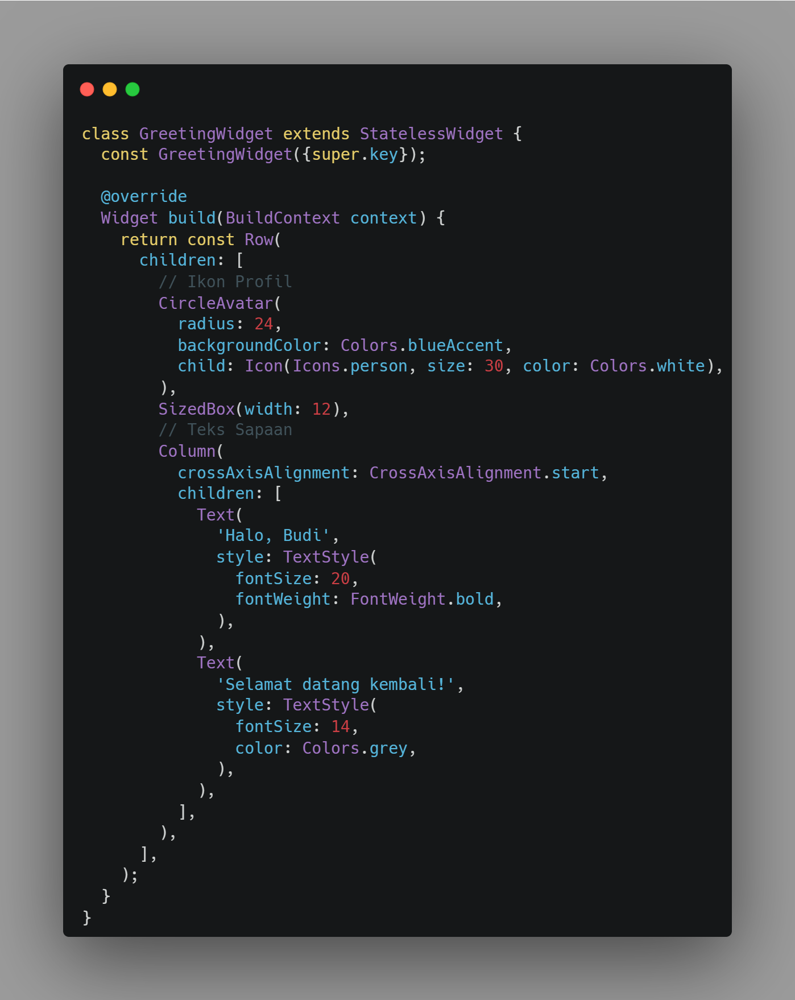
Karena kartu saldo harus dapat bereaksi saat ikon mata ditekan, widget ini dibuat sebagai 'StatefulWidget' bernama 'BalanceCardWidget'. Class state-nya, '_BalanceCardWidgetState', menyimpan variabel boolean '_isBalanceVisible' untuk status tampil/sensor saldo, serta nilai nominal saldo yang akan ditampilkan.
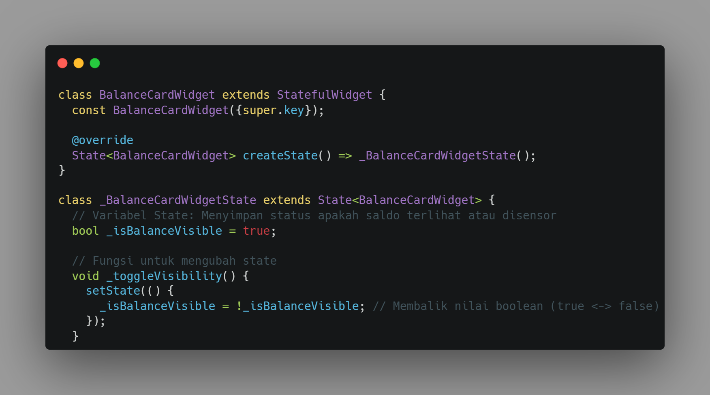
Menambahkan 'IconButton' pada kartu saldo dengan ikon mata ('visibility' / 'visibility_off') yang berubah sesuai kondisi. Pada properti 'onPressed', dipanggil method 'setState()' untuk membalik nilai boolean '_isBalanceVisible', sehingga tampilan nominal saldo berganti antara angka asli dan tanda sensor ('*********') menggunakan operator ternary.
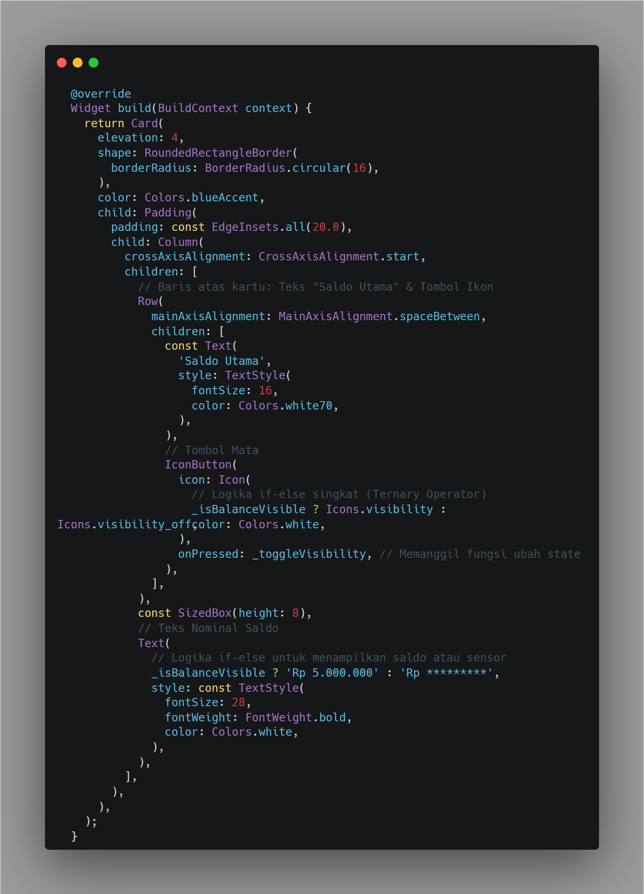
Menggabungkan 'GreetingWidget' (Stateless) dan 'BalanceCardWidget' (Stateful) ke dalam satu 'Scaffold' utama yang dibungkus 'Padding'. Hasilnya, sapaan statis tampil di bagian atas, sedangkan kartu saldo di bawahnya dapat merespons ketukan pada ikon mata untuk menyembunyikan atau menampilkan nominal saldo.
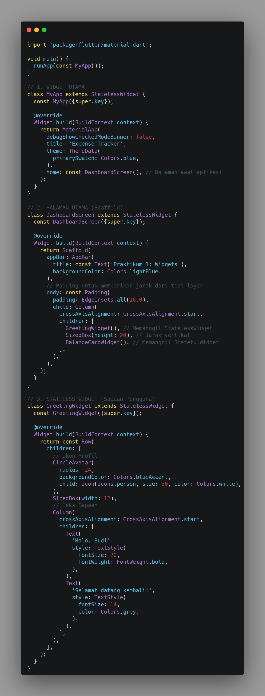
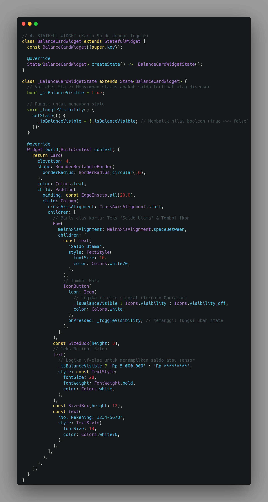
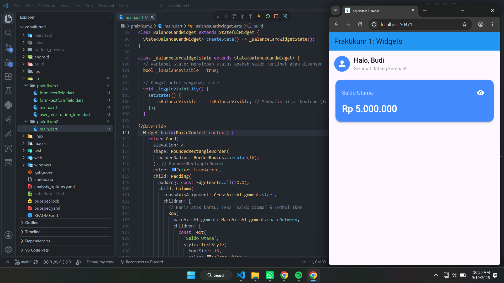
Tugas 1 - Styling: Mengubah warna tema pada 'BalanceCardWidget' dari biru ('Colors.blueAccent') menjadi hijau emerald ('Colors.teal') pada properti 'color' di widget 'Card'.
Tugas 2 - Modifikasi UI: Menambahkan teks statis "No. Rekening: 1234-5678" di bagian bawah nominal saldo di dalam kartu, menggunakan widget 'Text' tambahan setelah teks nominal saldo pada 'Column'.
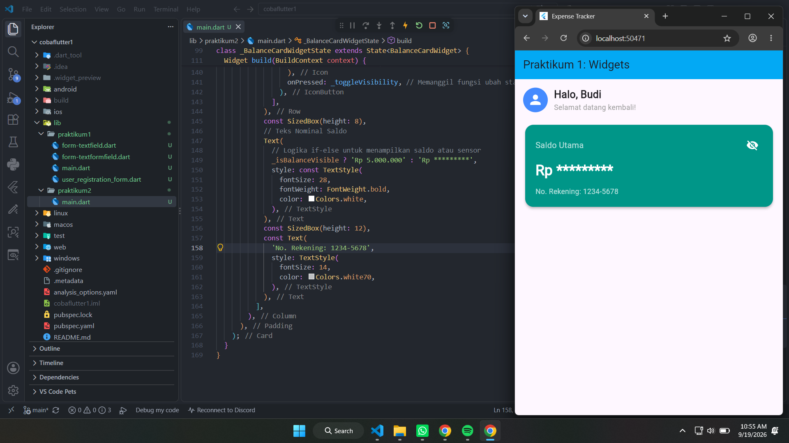
Modul 2: Layouting & Styling (Row, Column, Container, dan ListTile)
Teori
Langkah-Langkah
Membuat 'ActionButtonsWidget' yang meng-extend 'StatelessWidget' menggunakan 'Row' untuk meletakkan tombol Pemasukan, Pengeluaran, dan Transfer sejajar secara horizontal. Properti 'mainAxisAlignment' diset ke 'MainAxisAlignment.spaceEvenly' agar jarak antar tombol terbagi rata. Setiap tombol dibangun melalui fungsi pembantu '_buildActionButton' yang membungkus ikon dengan 'Container' berwarna transparan sesuai kategori transaksi.
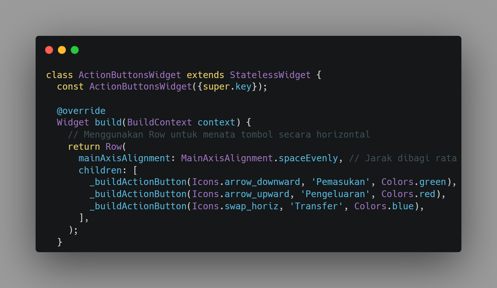
Membuat 'RecentTransactionsWidget' menggunakan 'Column' dengan 'crossAxisAlignment.start' untuk menumpuk teks judul "Transaksi Terakhir" dan daftar transaksi. Setiap item transaksi disusun menggunakan 'ListTile' berturut-turut di dalam sebuah 'Card', dengan 'leading' berupa 'CircleAvatar' berikon, 'title' berupa nama transaksi, 'subtitle' berupa tanggal, dan 'trailing' berupa nominal transaksi.
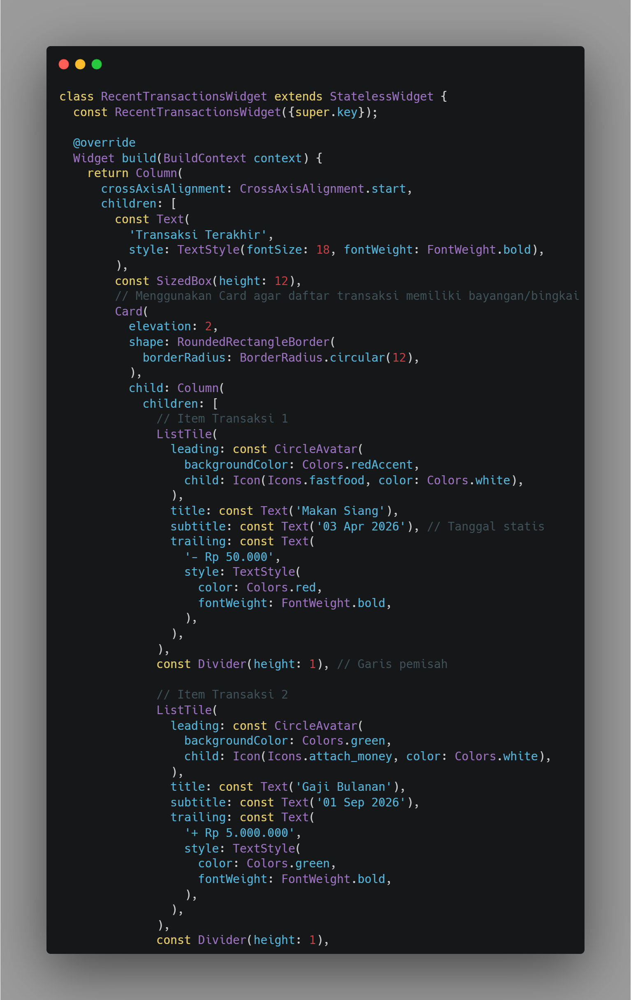
Menggabungkan seluruh komponen dari Modul 1 ('GreetingWidget' dan 'BalanceCardWidget') dan Modul 2 ('ActionButtonsWidget' dan 'RecentTransactionsWidget') ke dalam satu 'Column' di dalam 'Scaffold'. Seluruh konten dibungkus dengan 'SingleChildScrollView' agar layar tidak mengalami overflow ketika daftar transaksi bertambah panjang, serta diberi 'Padding' agar memiliki jarak dari tepi layar.
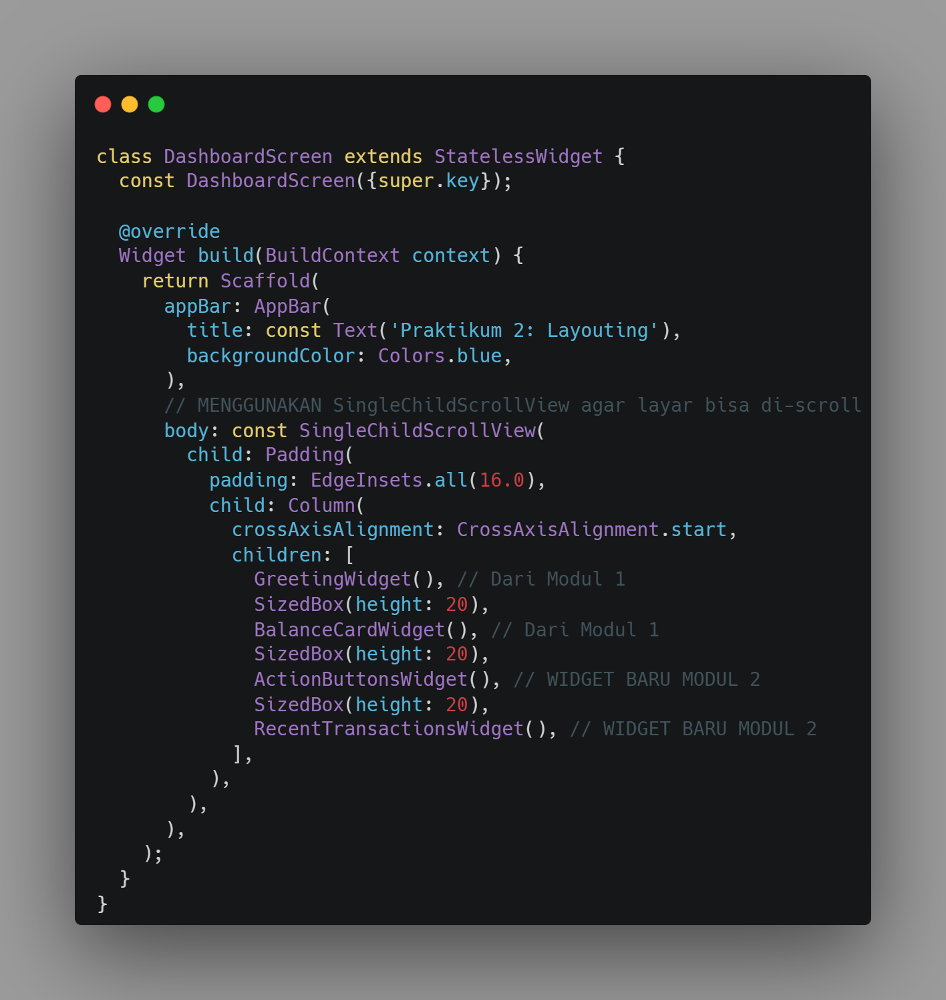
Setelah semua widget digabungkan, dihasilkan sebuah mockup dashboard aplikasi Expense Tracker yang menampilkan sapaan pengguna, kartu total saldo yang dapat disembunyikan, deretan tombol aksi (Masuk, Keluar, Transfer), serta daftar transaksi terakhir yang rapi dan dapat di-scroll.
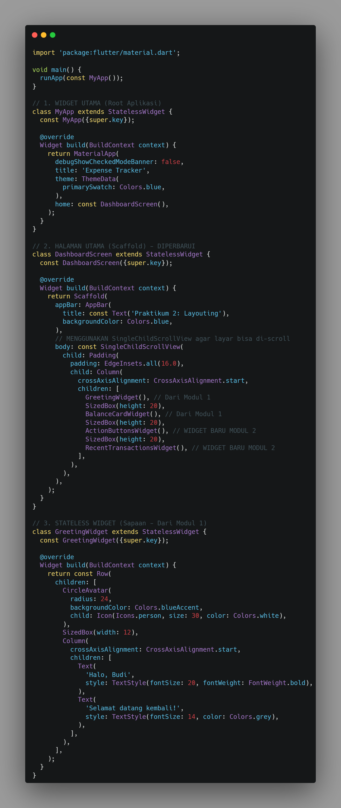
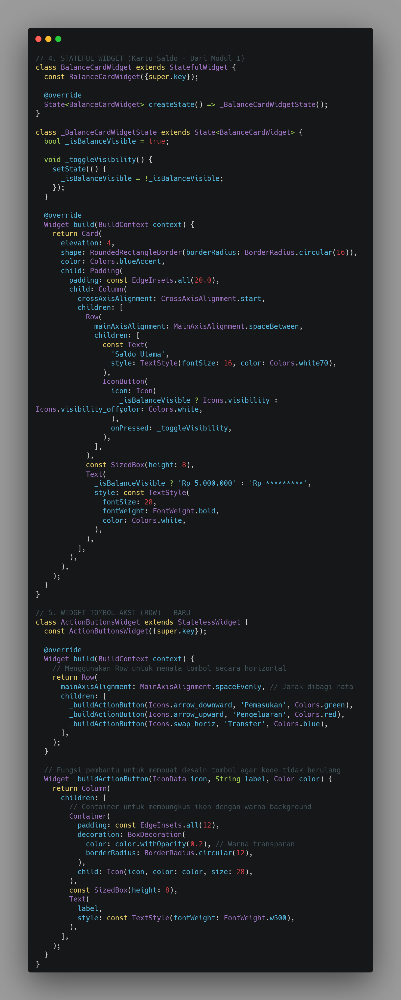
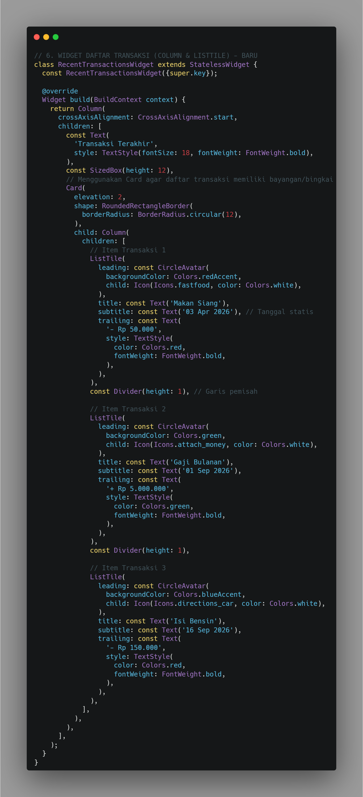
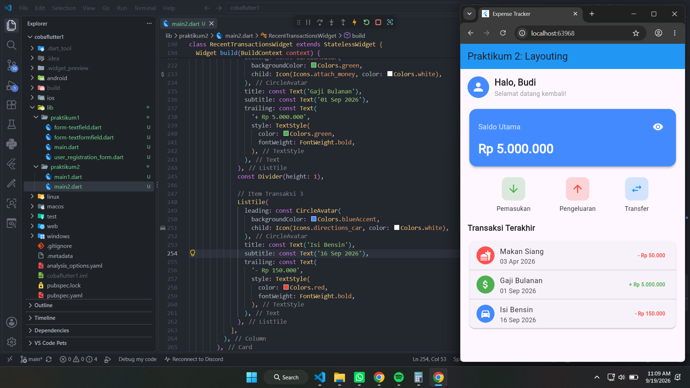
Tugas 1 - Styling: Pada widget daftar transaksi ('ListTile'), mengubah warna teks 'trailing' untuk transaksi pengeluaran menjadi merah ('Colors.red') dan transaksi pemasukan menjadi hijau ('Colors.green') melalui properti 'TextStyle(color: ...)'.
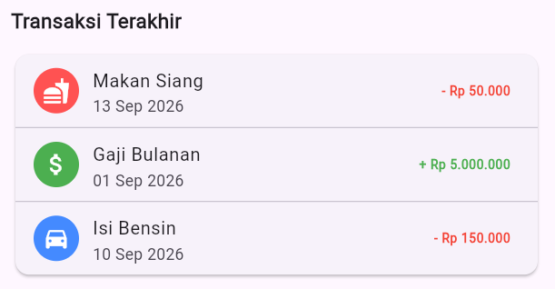
Tugas 2 - Tambah Data: Menambahkan dua transaksi fiktif baru ke dalam daftar "Transaksi Terakhir" dengan menyisipkan dua 'ListTile' tambahan (beserta 'Divider' pemisah) di bawah kode transaksi yang sudah ada pada 'RecentTransactionsWidget'.
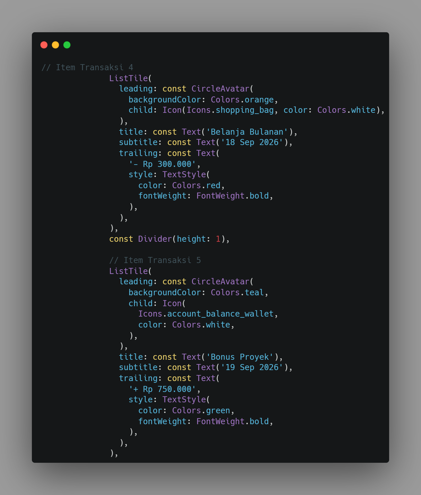
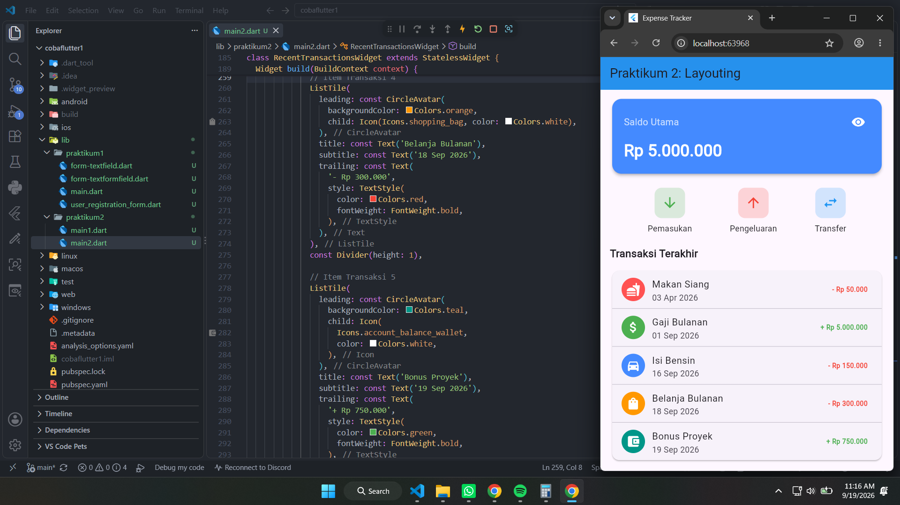